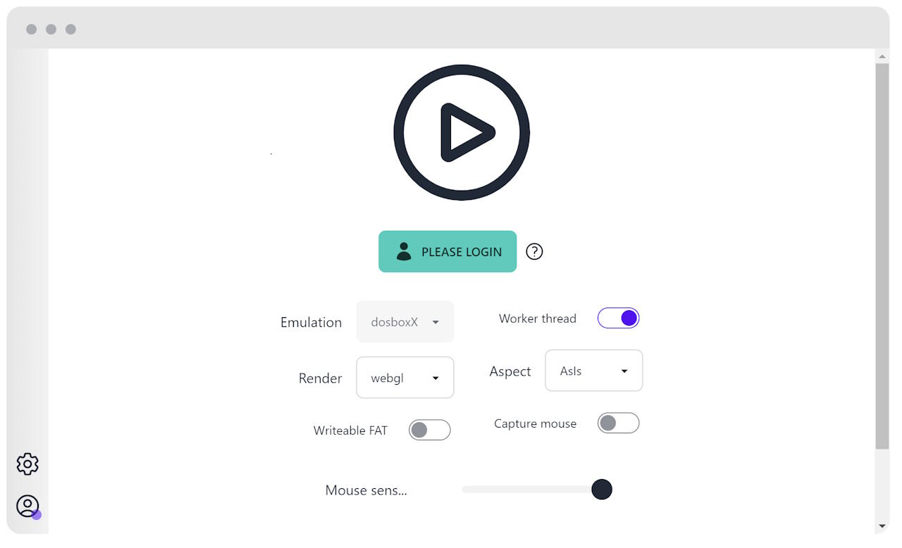

Getting Started js-dos do not require any backend to start. You need to have some static website hosting where you put your webpage with DOS.
You can start with any template of webpage you want. You only need some div element where to put a dos window.
Adding js-dos to your web page This is a common thing in web development, you need to add js-dos related scripts to your webpage. js-dos provides a CDN with the latest version, just add this html to <head> section of page:
<!-- js-dos style sheet -->
<link rel="stylesheet" href="https://v8.js-dos.com/latest/js-dos.css">
<!-- js-dos -->
<script src="https://v8.js-dos.com/latest/js-dos.js"></script>
Alternatively, you can download the latest version of js-dos from releases page. Or, install it via npm .
Provide js-dos bundle to run The easiest way to run some program is to prepare js-dos bundle . You can do it manually, but the easier way is to use Studio .
In this example, we will use a bundle of Digger game. Direct link to it:
https://cdn.dos.zone/original/2X/9/9ed7eb9c2c441f56656692ed4dc7ab28f58503ce.jsdos
Write a script to run DOS Now, we need to provide some div element and tell js-dos to run bundle using t:
<div id="dos"></div>
<script>
Dos(document.getElementById("dos"), {
url: "https://cdn.dos.zone/original/2X/9/9ed7eb9c2c441f56656692ed4dc7ab28f58503ce.jsdos",
});
</script>
That is, Dos constructor takes two arguments:
div element where to put a dos window
options with initial configuration
<!DOCTYPE html>
<html lang="en">
<head>
<meta charset="UTF-8">
<title>js-dos digger 8.xx</title>
<style>
html, body {
height: 100%;
}
#dos {
width: 100%;
height: 100%;
}
</style>
<!-- js-dos style sheet -->
<link rel="stylesheet" href="https://v8.js-dos.com/latest/js-dos.css">
<!-- js-dos -->
<script src="https://v8.js-dos.com/latest/js-dos.js"></script>
</head>
<body>
<div id="dos" style="width: 100%; height: 100%"></div>
<script>
Dos(document.getElementById("dos"), {
url: "https://cdn.dos.zone/original/2X/9/9ed7eb9c2c441f56656692ed4dc7ab28f58503ce.jsdos",
});
</script>
</body>
</html>
Test in browser Open your test webpage in browser, you should see something like this:
 Do not try to run it using file:// protocol, it will not work. You need to host it locally. (http://localhost:8080)
Last modified: 05 сентября 2024